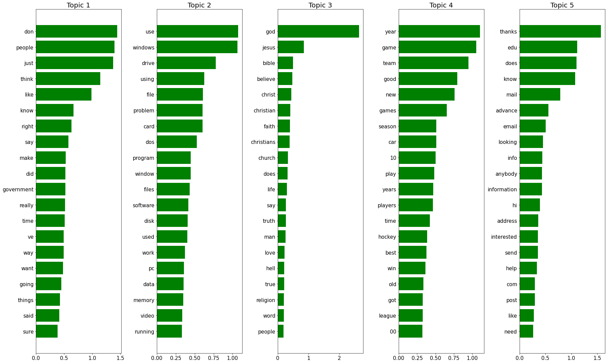

# General use imports
import numpy as np
import pandas as pd
import seaborn as sns
import matplotlib.pyplot as plt
import math
import sysAbout
Notebook inspired by the example of Dimensionality Reduction done in the course Machine Learning Modeling Pipelines in Production, by DeepLearning.AI.
Notebook Reference: https://colab.research.google.com/drive/1Cf0JMZ9RQdpmwsJ0PxSxm6IKYtrWr02j#scrollTo=MPsBWkL07Srw.
[25-Oct-2021] This notebook was extended to capture background knowledge from NLP from the CS224U 2019 - Natural Language Understanding course from Stanford CS224U-2019 - Natural Language Understanding - Stanford Univerity.
Background:
Vector Comparison
Common vector comparison measures are: - Euclidean distance between vectors u and v: \(euclidean(u,v) = \sqrt{\sum_{i=1}^{n}\left | u_{i}- v_{i}] \right |^2}\) - Cosine distance - Matching coefficient - Jaccard distance - Dice distance - Overlap - KL divergence
Based on Christopher Potts: - Euclidean and Jaccard and Dice with raw count vectors will tend to favor raw frequency over distributional patters - Euclidean with L2-normed vectors is equivalent to cosine with respect to ranking. - Jaccard and Dice are equivalent w.r.t. ranking.
Basic reweighting
Reweighting of vectors in natural language can amplify the importance and trustworthy of words in a text. The idea is to reveal what is important. Methods for reweighting are: - L2 norming - Probability distribution - Observed/expected - Pointwise Mutual Information (PMI) - Positive PMI. - TF-IDF: Term Frequency - Inverse Document Frequency
Pointwise Mutual Information (PMI) is observed/expected in the log-space (with log(0) = 0. Based on Christopher Potts: - Many weighting schemes end up favoring rare events that may not be trustworthy. - PMI and its variant will amplify the values of counts that are tiny relative to their row and columns. - TF-IDF severly punishes words that appear in many documents - it behaves oddly for dense matrices, which can include word x word matrices.
from sklearn.feature_extraction.text import TfidfVectorizer
from sklearn.decomposition import NMF
from sklearn.datasets import fetch_20newsgroups# Helper function from Christopher Potts used on the course CS224u, Stanford, Spring 2021 are used in the notebook.
# Source github link is here: https://github.com/cgpotts/cs224u
# Instead of using the word-to-word matrixes from CS224u, we used the dataset from 20newsgroups from sklearn and
# generate the co-occurance matrix for the 100 first rows of this dataset.
import os
import vsm
import utils# 20newsgroups dataset
# Test using 20newsgroups dataset from https://scikit-learn.org/stable/datasets/real_world.html#the-20-newsgroups-text-dataset
# Download data
data = fetch_20newsgroups(remove=('headers', 'footers', 'quotes'))
# Get the actual text data from the sklearn Bunch
data = data.get("data")print(data[:1])['I was wondering if anyone out there could enlighten me on this car I saw\nthe other day. It was a 2-door sports car, looked to be from the late 60s/\nearly 70s. It was called a Bricklin. The doors were really small. In addition,\nthe front bumper was separate from the rest of the body. This is \nall I know. If anyone can tellme a model name, engine specs, years\nof production, where this car is made, history, or whatever info you\nhave on this funky looking car, please e-mail.']#Lets generate the co-occurance matrix
from sklearn.feature_extraction.text import CountVectorizer
vectorizer = CountVectorizer(ngram_range=(1,1)) # default unigram model
X = vectorizer.fit_transform(data[:100])
Xc = (X.T * X) # matrix manipulation
Xc.setdiag(0) # set the diagonals to be zeroes as it's pointless to be 1
#Convert into matrix
names = vectorizer.get_feature_names() # This are the entity names (i.e. keywords)
#print(names)
df = pd.DataFrame(data = Xc.toarray(), columns = names, index = names)
#df.to_csv('20newsgroups.csv', sep = ',')
df.head()| 00 | 000 | 0005895485 | 01 | 02 | 02194 | 0320 | 04 | 05 | 06 | ... | ysc | yscvax | zangezour | zangibasar | zealand | zeik | zilkade | zone | zoologists | zoom | |
|---|---|---|---|---|---|---|---|---|---|---|---|---|---|---|---|---|---|---|---|---|---|
| 00 | 0 | 0 | 0 | 6 | 4 | 0 | 0 | 4 | 6 | 5 | ... | 1 | 1 | 0 | 0 | 0 | 0 | 0 | 0 | 0 | 0 |
| 000 | 0 | 0 | 0 | 0 | 0 | 0 | 5 | 0 | 0 | 0 | ... | 0 | 0 | 5 | 5 | 0 | 0 | 5 | 0 | 0 | 0 |
| 0005895485 | 0 | 0 | 0 | 0 | 0 | 0 | 0 | 0 | 0 | 0 | ... | 0 | 0 | 0 | 0 | 0 | 0 | 0 | 0 | 0 | 0 |
| 01 | 6 | 0 | 0 | 0 | 24 | 0 | 0 | 24 | 36 | 30 | ... | 6 | 6 | 0 | 0 | 0 | 0 | 0 | 0 | 0 | 0 |
| 02 | 4 | 0 | 0 | 24 | 0 | 0 | 0 | 16 | 24 | 20 | ... | 4 | 4 | 0 | 0 | 2 | 0 | 0 | 1 | 0 | 0 |
5 rows × 4906 columns
Lets compare different distance metrics (i.e. Euclidean, Pointwise Mutual Information and TF-IDF
# Check the neighbor distance using Euclidean
vsm.neighbors('car', df, distfunc=vsm.euclidean).head()car 0.000000
insurance 442.483898
25 443.953826
rate 530.062260
same 540.973197
dtype: float64# Check the neighbor distance using PMI (Pointwise Mutual Information)
df_pmi = vsm.pmi(df)
vsm.neighbors('car', df_pmi).head()car 0.000000
sports 0.134340
turbo 0.153308
toyota 0.162001
accidents 0.173207
dtype: float64# Check the neighbor distance using TFIDF - Term Frequency - Inverse Document Frequency
df_tfidf = vsm.tfidf(df)
vsm.neighbors('car', df_tfidf).head()car 0.000000
sports 0.214020
turbo 0.362690
classification 0.369355
corrado 0.369355
dtype: float64#Using the helper function to visualize the PMI results using T-SNE
vsm.tsne_viz(df_pmi, output_filename='pmi-test')
Dimensionality Reduction
The “curse of dimensionaliy” is a known concept on machine learning (ML). In summary it relates to the fact that too many features can be a problem for ML algorithms.
Examples of dimentionality reductions are: - Latent Semantic Analysis (LSA) - Principa Component Analysis (PCA) - Latent Dirichlet Allocation (LDA) - Non-Negative Matrix Factorization (NMF) - Independent Component Analysis (ICA) - Singular value decomposition (SVD)
Use sklearn.decomposition and sklearn.manifold for more information.
NMF - non-negative matrix factorization.
In this section of the notebook I am going to concentrate on NMF - non-negative matrix factorization.
NMF is a dimensionality reduction technique in unsupervised learning, but in contrast with PCA, the NMF model is interpretable. NMF requires the sample features to be non-negative, thus NMF can tend to lose more information when truncating.
NMF in text minining consider the bag-of-words matrix representation where each row corresponds to a word, and each column to a document.
NMF will produce two matrices W and H, thus we can write V = W x H. According to COLYER, the columns W can be interpreted as the terms to topic information (i.e. topic/bags of words). H represents the importance of the given topic to a a given document.
We can be write NMF as: term-document matrix (V) = terms/topics (W) + topics/docs (H)
In practise, the inputs is: - count vectorizer or TF-IDF vectorizer
the parameters to tune are: - Number of topics - text preprocessing (e.g. stop words, min/max doc frequency, parts of speech)
the output: - W matrix representing relation between terms and topics - H matrix representing how to use the topics to reconstruct original documents (i.e. documents to topics relation)

References:
[2] COLYER
[3] CS224U-2019 - Natural Language Understanding - Stanford Univerity
Helping functions
# Define function for plotting top 20 words for each topic
def plot_words_for_topics(n_comp, nmf, feature_names):
fig, axes = plt.subplots(((n_comp-1)//5)+1, 5, figsize=(25, 15))
axes = axes.flatten()
for num_topic, topic in enumerate(nmf.components_, start=1):
# Plot only the top 20 words
# Get the top 20 indexes
top_indexes = np.flip(topic.argsort()[-20:])
# Get the corresponding feature name
top_features = [feature_names[i] for i in top_indexes]
# Get the importance of each word
importance = topic[top_indexes]
# Plot a barplot
ax = axes[num_topic-1]
ax.barh(top_features, importance, color="green")
ax.set_title(f"Topic {num_topic}", {"fontsize": 20})
ax.invert_yaxis()
ax.tick_params(labelsize=15)
plt.tight_layout()
plt.show()
# Run the function
#plot_words_for_topics(n_comp, nmf, feature_names)20newsgroups dataset
# Test using 20newsgroups dataset from https://scikit-learn.org/stable/datasets/real_world.html#the-20-newsgroups-text-dataset
# Download data
data = fetch_20newsgroups(remove=('headers', 'footers', 'quotes'))
# Get the actual text data from the sklearn Bunch
data = data.get("data")# Printing the data in a list format.
print(f"Data has {len(data)} elements.\n")
print(f"First 2 elements: \n")
for n, d in enumerate(data[:1], start=1):
print("======"*10)
print(f"Element number {n}:\n\n{d}\n")Data has 11314 elements.
First 2 elements:
============================================================
Element number 1:
I was wondering if anyone out there could enlighten me on this car I saw
the other day. It was a 2-door sports car, looked to be from the late 60s/
early 70s. It was called a Bricklin. The doors were really small. In addition,
the front bumper was separate from the rest of the body. This is
all I know. If anyone can tellme a model name, engine specs, years
of production, where this car is made, history, or whatever info you
have on this funky looking car, please e-mail.
def get_vector(data):
# Convert a collection of raw documents to a matrix of TF-IDF features.
#vectorizer = TfidfVectorizer(max_features=500, stop_words='english')
# max_df: when building the vocabulary ignore terms that have a document frequency strictly higher than the given threshold
# min_df: when building the vocabulary ignore terms that have a document frequency strictly lower than the given threshold
vectorizer = TfidfVectorizer(max_df=0.95, min_df=2,
max_features=500,
stop_words='english')
# Vectorize original data
vect_data = vectorizer.fit_transform(data)
# Print dimensionality
print(f"Data has shape {vect_data.shape} after vectorization.")
print(f"Each data point has shape {vect_data[0].shape} after vectorization.")
return vectorizer, vect_data#Function that
def try_NMF(n_comp, data):
'''
input:
n_comp = number of components
vect_data = data matrix to be decomposed
output:
plot words for topics
'''
vectorizer, vect_data = get_vector(data)
nmf = NMF(n_components=n_comp, random_state=42)
# Lets learn a NMF model for the vect_data
nmf.fit(vect_data)
feature_names = vectorizer.get_feature_names()
plot_words_for_topics(n_comp, nmf, feature_names)# Try NMF for 5 topics
try_NMF(5, data)Data has shape (11314, 500) after vectorization.
Each data point has shape (1, 500) after vectorization./Users/castrma/miniconda3/envs/tensorflow_py37/lib/python3.7/site-packages/sklearn/decomposition/_nmf.py:315: FutureWarning: The 'init' value, when 'init=None' and n_components is less than n_samples and n_features, will be changed from 'nndsvd' to 'nndsvda' in 1.1 (renaming of 0.26).
"'nndsvda' in 1.1 (renaming of 0.26)."), FutureWarning)
Non-conformance dataset (internal dataset)
# Get from csv to dictionary
dict_csv = pd.read_csv('/Users/castrma/Projects/DT/svt-data-processing/others/csv/notification_long_text.csv',
header=None, index_col=0, squeeze=True).to_dict()
#print(dict_csv)#create a list of non-conformance
internal_data = dict_csv.values()
#Remove NaN from list
internal_data = [x for x in internal_data if pd.isnull(x) == False]print(f"Data has {len(internal_data)} elements.\n")
print(f"First element: \n")
#for n, d in enumerate(internal_data[:1], start=1):
# print("======"*10)
# print(f"Element number {n}:\n\n{d}\n")Data has 386102 elements.
First element:
try_NMF(5, internal_data)Data has shape (386102, 500) after vectorization.
Each data point has shape (1, 500) after vectorization.#print(f"Original text:\n{data[0]}\n")
#print(next(iter(data)))
#print(f"Representation based on topics:\n{vect_data_internal[0]}")#Function that
def NMFv2(n_comp, data):
'''
input:
n_comp = number of components
vect_data = data matrix to be decomposed
output:
plot words for topics
'''
vectorizer, vect_data = get_vector(data)
#beta_loss: beta divergence to be minimized
#solver: numerical solver to use. mu = Multiplicative Update solver
#max_iter: maximum number of iterations before timing out.
#alpha: constant that multiplies the regularization terms
#l1_ratio: the regularization mixing parameter
nmf = NMF(n_components=n_comp, random_state=42,
beta_loss='kullback-leibler', solver='mu', max_iter=1000, alpha=.1,
l1_ratio=.5)
# Lets learn a NMF model for the vect_data
nmf.fit(vect_data)
feature_names = vectorizer.get_feature_names()
plot_words_for_topics(n_comp, nmf, feature_names)NMFv2(5, internal_data)Data has shape (386102, 500) after vectorization.
Each data point has shape (1, 500) after vectorization./Users/castrma/miniconda3/envs/tensorflow_py37/lib/python3.7/site-packages/sklearn/decomposition/_nmf.py:315: FutureWarning: The 'init' value, when 'init=None' and n_components is less than n_samples and n_features, will be changed from 'nndsvd' to 'nndsvda' in 1.1 (renaming of 0.26).
"'nndsvda' in 1.1 (renaming of 0.26)."), FutureWarning)